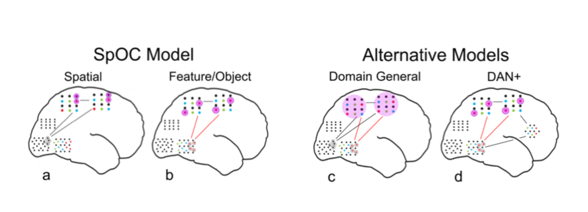
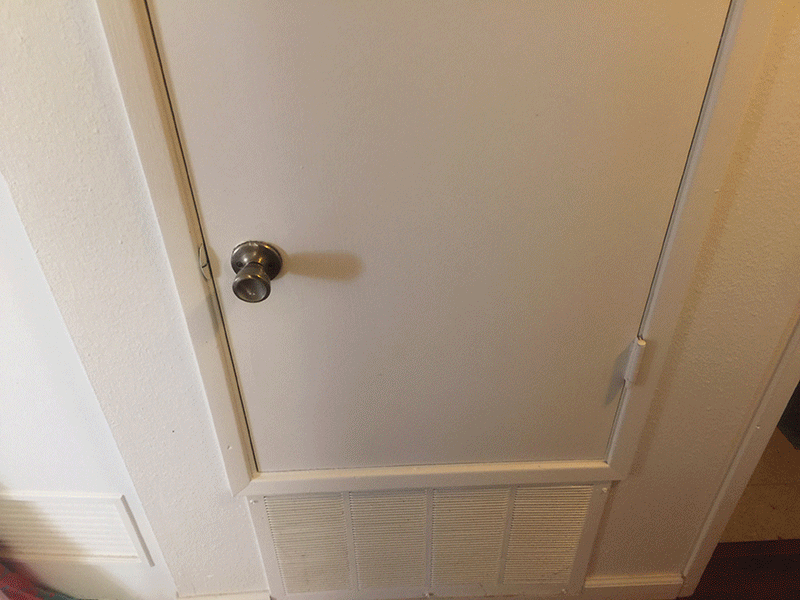
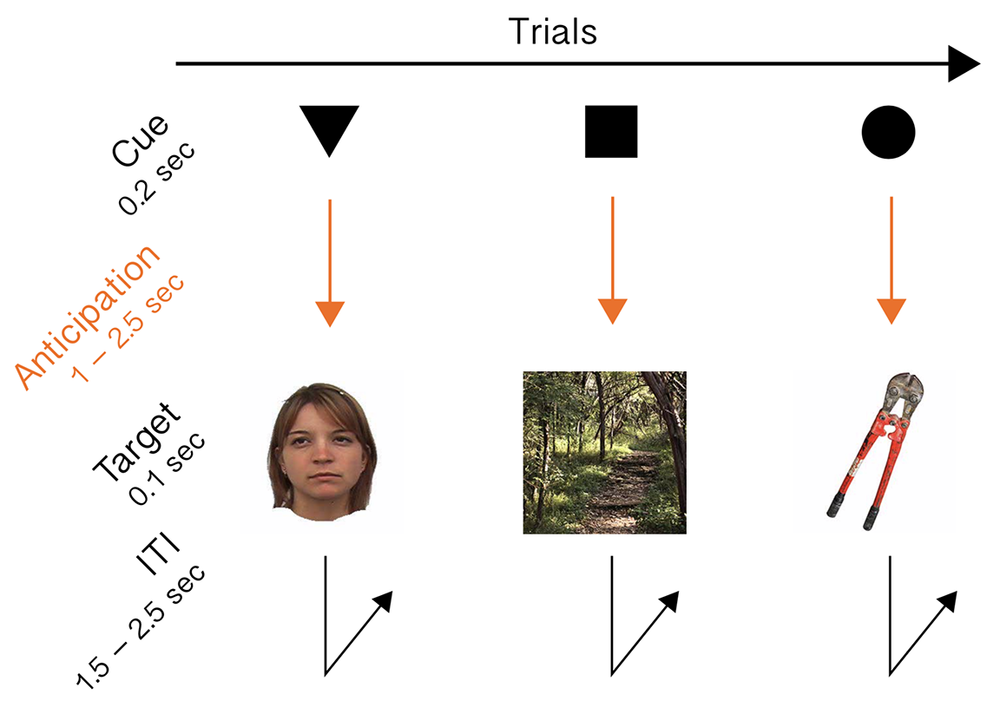
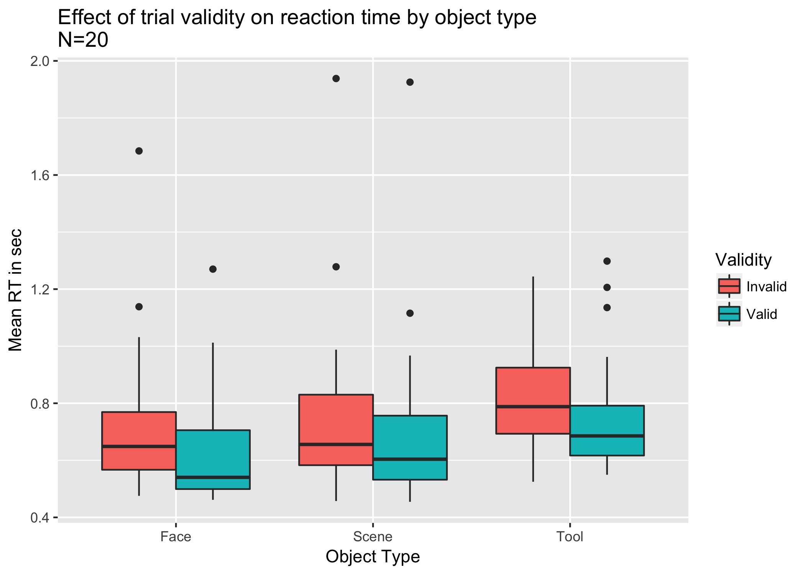

The neural mechanisms of object-based attention
In the Mangun lab, we’re studying the neural mechanisms of attention, which means in part that we’re trying to answer the question:
How does the brain select sensory information for privileged access to cognition and perception? To address that question, we’re working on a model of attention called the specificity of control – or SpOC – model.

The SpOC (pronounced “spoke”) model of attention compared with alterantives. Mangun, unpublished
According to this model, the dorsal attention network (DAN), which is a group of areas in frontal and parietal cortices that have previously been associated with voluntary selective attention, is made up of many smaller-scale networks that each are functionally connected to a specific sensory area. These specific connections could serve as channels through which executive control areas exert their influence, and selectively enhance or suppress sensory neural activity. In this way, the DAN would act as an interface between sensory areas and upstream executive signals.
Recently I’ve been working on a possible extension of the SpOC model: Not only do the assembly-level networks in the DAN each connect to specific sensory areas, but they also operate on those sensory areas by the same mechanism. We think that mechanism involves modulation of alpha band, or 8-12 Hz, oscillatory neural activity. Much previous work on spatial attention and some work on feature-based attention has shown that the power of alpha band oscillations decreases in brain areas responsive to the attended region of space, or low-level visual feature. This body of findings, together with the SpOC model, leads us to the hypothesis that if DAN subnetworks operate on sensory areas by the same mechanism, then we should see alpha modulation during attention to other classes of visual targets that have their own dedicated processing areas.
Two such dedicated processing areas that have not previously been studied in the context of functional inhibition by alpha are the fusiform face area (FFA) and the parahippocampal place area (PPA). Both areas have been extensively characterized by Nancy Kanwisher and her colleagues. The FFA is a bilateral, but right-emphasized area of the inferior temporal lobe that is highly responsive to face images. The PPA is a bilateral, medial temporal area that is highly responsive to images of places or scenes, although there is still much to figure out about exactly what kind of place information the PPA is responsive to. Anyway, the point is that these are notable examples of high level visual areas that, under the SpOC model, would be targets of influence from specific assembly-level networks within the DAN. I’m going to classify these areas as object representation areas, because they respond to more complex and more holisitic visual information than what we typically think of as visual features such as motion, color, and orientation.
A quick aside on terminology: what I refer to as “object-based attention” is quite distinct from the term as it appears in work similar to Egly’s studies of same-object advantage. In the Egly terminology, visual continuity properties seem to facilitate the automatic spreading of attention from cued to same-object locations, but not to different-object locations just as far from the cue. In my use of the term “object-based attention,” I’m referring to a voluntary, selective enhancement of a cued object category, such as cars, cats, faces, or houses. This form of selection can also be thought of as attention to high-level visual features.
This is a subtle form of attention, less immediately relatable than something like covert spatial attention. So I’ll provide an ecological example from my own life.
Over the last few weeks of heavy rains, some little critter has taken up residence in my attic. Every night I’ve been hearing it rustling around above my head, although thankfully separated from me by a thick layer of asbestos, until now, when I hear it crash its way into my furnace closet.
I know it’s some kind of small animal, but I want to know exactly what kind. Once I fling open the closet door, I need to be able to identify it as quickly and accurately as possible, so that I can execute the appropriate response.

It turns out it’s a squirrel, so I slam the door closed before it leaps out into my house, and not with a fraction of second to spare.
This squirrel-based example illustrates the form of attention that we’re interested in capturing with an experimental paradigm. So we designed this simple task for participants to do while we record their EEG:

Diagram of object-based attention paradigm
We gave all participants a controller with two buttons, and told them: Press button 1 if target image is male face, natural place, or powered tool; press button 2 if target image is female face, urban place, or hand tool; do it as fast and accurately as you can. Crucially, participants were trained on the relationship between
cue shape and
target object category. A triangle indicated the upcoming appearance of a face. A square indicated the upcoming appearance of a place. A circle indicated the upcoming appearance of a tool. The cue validity was 80%, meaning that 20% of the time, the cue shape would mislead particiapnts and a target image from an uncued object category would appear. This cue validity-based design allowed us to contrast performance from trials where participants were anticipating the target object category against trials where participants were anticipating a
different object category than the one presented. All stimuli were presented at center fixation, so eye movements and spatial attention would be kept minimal and consistent across all participants and conditions. We recorded EEG data from 20 undergraduate participants performing this experiment, with about 400 trials for each participant.
We hoped that on any given validly-cued trial, after seeing the cue, participants would engage object-based attention for the cued category of object, which would enable them to perform the required identification (male vs. female, natural vs. urban, powered vs. non-powered) faster and more accurately than on invalidly-cued trials. It’s typical in attention research to check for an attention effect by looking at behavioral data such as reaction time (RT) or accuracy. When we looked at RT across all our oject categories, we saw statistically significant differences between valid trials and invalid trials, confirming our expectation that participants were utilizing object-based attention.

Reaction times were faster for validly-cued trials than invalidly-cued trials.
With our behavioral data supporting our assertion that our experimental paradigm was engaging object-based attention, we proceeded to our main question: Does EEG recorded during episodes of object-based attention show alpha band modulation, analogously with spatial and feature-based attention?